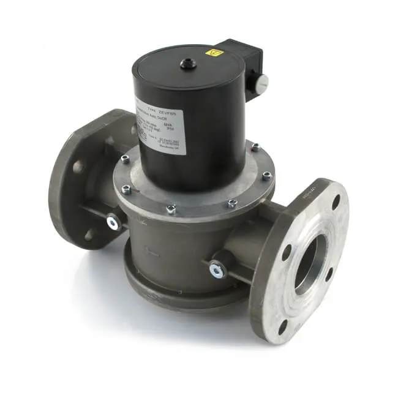

Emniyet Kapama Valfi, gaz sistemlerinde olası alev geri tepmesi, basınç dalgalanmaları veya sistem arızalarında anında devreye girerek gaz akışını keser ve yangın, patlama risklerini önler. Yüksek hızlı elektrik/pnömatik aktüatörü sayesinde milisaniyeler içinde kapanma sağlar.
Öne Çıkan Özellikler
- Hızlı Kapanma Süresi: 15 ms’ye kadar tepki süresiyle hızlı emniyet.
- Yüksek Dayanım: 16 bar çalışma basıncına kadar dayanıklı paslanmaz çelik gövde.
- Güvenilir Aktüatör: Elektrik (24V DC / 220V AC) veya pnömatik seçenekler.
- Standart Uyumluluk: EN 161 ve ISO 23551-1 standartlarına uygun.
- Kolay Montaj: Flanşlı veya dişli bağlantı seçenekleri.
- Olağanüstü Güvenlik: Termal aşırı yük koruması ve manuel elle açma mekanizması.
Teknik Özellikler
| Model | EV100-EX |
|---|---|
| Çalışma Basıncı | 0.5 – 16 bar |
| Tepki Süresi | <15 ms |
| Bağlantı Tipi | Flanşlı (PN16) / 1" – 4" BSP dişli |
| Gövde Malzemesi | Paslanmaz Çelik (AISI 316) |
| Aktüatör Tipi | Elektrik (24V DC / 220V AC) veya Pnömatik (5–7 bar) |
| Çalışma Sıcaklığı | -20°C … +60°C |
| Koruma Sınıfı | IP67 |
| Elektriksel Kontak | SPDT 5A 250V AC / 5A 30V DC |
| Ağırlık | 10 kg (Pnömatik aktüatörlü) |
Kullanım Alanları
- Doğalgaz ve LPG yakıt hatları
- Endüstriyel kazanın emniyet kontrolü
- Fırın, kurutma ve pişirme ekipmanları
- Kimya ve petrokimya tesisleri
- Isıtma, havalandırma ve iklimlendirme (HVAC) sistemleri
- Yangın suppression sistemleri